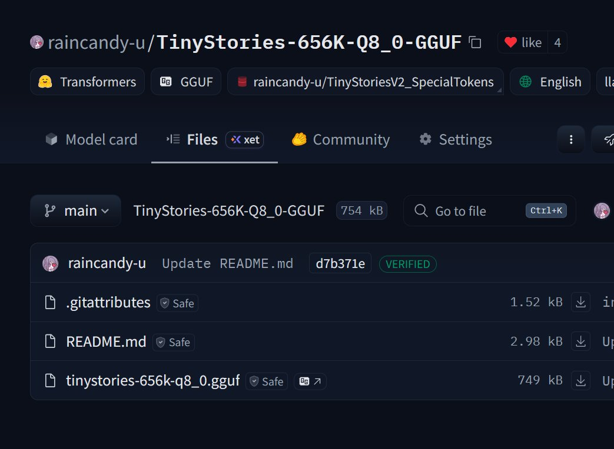
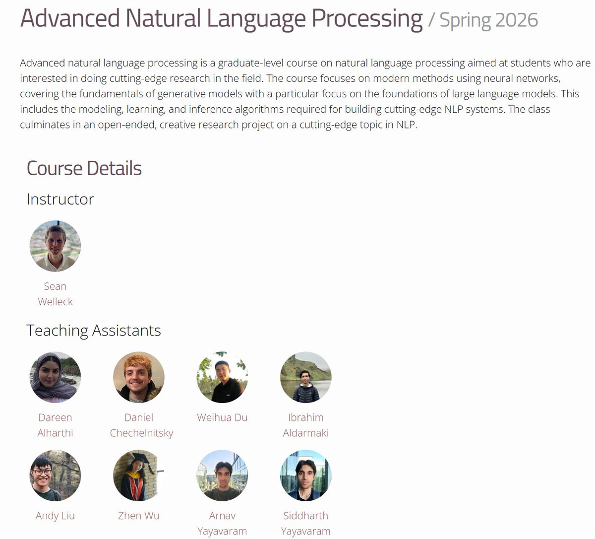

推一下我两年前做的项目：
https://t.co/TT4YrJ42ob
https://t.co/I7ZBg2AHvM
（量化后）能存进一张软盘的LLM，也能写英文故事😇

https://t.co/I7ZBg2AHvM
（量化后）能存进一张软盘的LLM，也能写英文故事😇


CMU 这门 NLP 课最硬核的地方：第一份作业就让你从零手搓一个 LLaMA。
卡内基梅隆大学公开了 2026 春季《Advanced NLP》课程，教授是 Sean Welleck。整套资源包括完整课程主页、课件、视频和配套代码，内容从 Tokenizer、Transformer、语言模型基础，一路讲到 RAG、多模态、RLHF、MoE、长上下文和 https://t.co/9bYRW6xJMn
卡内基梅隆大学公开了 2026 春季《Advanced NLP》课程，教授是 Sean Welleck。整套资源包括完整课程主页、课件、视频和配套代码，内容从 Tokenizer、Transformer、语言模型基础，一路讲到 RAG、多模态、RLHF、MoE、长上下文和 https://t.co/9bYRW6xJMn